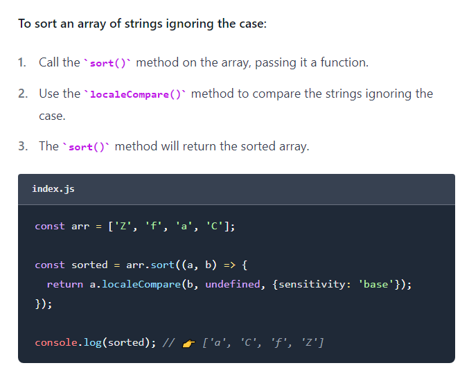
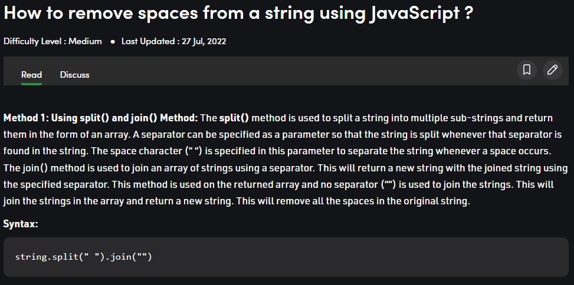

In this lab we learned how to code functions that take user input in js. Then we embeded the output onto our website.
This lab was pretty simple, no complaints or issues here.
We found out that sort(), prioritized uppercase letters first, and then does lowercase letters. For example my firstname/ lastname 'Micah Mahelona' comes out of the organizer as 'MMaaacehhilno'. This is because it uses the 'ASCII' table to sort characters.
To figure out how to make a case-insensitive sorter, I had to do a little research. From this site I discovered that I could use something called local compare to make the sort ignore a letter's case.
 To make our function ignore/ omit white spaces, we just can to remove them with .split(' ') and join(''). These strings will be split and rejoined where each space wass, effectively removing each them. If we do this before sorting, the final output will not contain white spaces. 